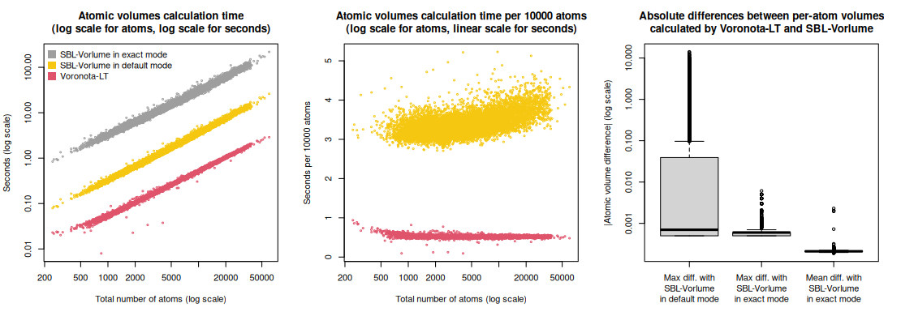
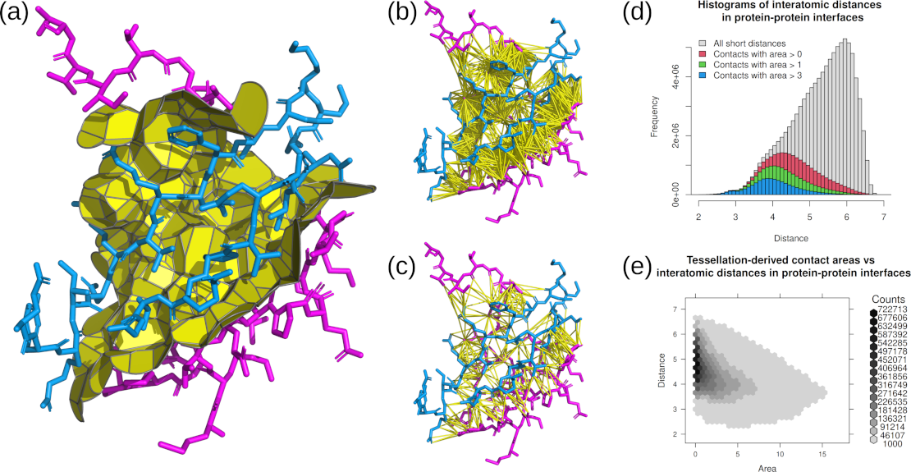

Voronota-LT command-line tool was benchmarked on a diverse set of structures of multi-chain biological assemblies downloaded from the Protein Data Bank.
All the 14861 used PDB IDs, and the summary values obtained after processing their first biological assemblies, are in the table “pdb_ids_sizes_correlations_times.tsv”.
All the encountered inter-chain interfaces and their areas are liste in the table “pdb_ids_chain_chain_areas.tsv”.
Below are plots summarizing the time efficiency of constructing contacts using vanilla Voronota (Vanilla-AW) and various modes of Voronota-LT (LT-*). Total running times (including input, computation and output routines) were used for every plot. All the software was compiled and run on the same machine (20-core Intel(R) Xeon(R) Silver 4210R CPU @ 2.40GHz, Ubuntu Linux 23.04, GCC g++ compiler version 12.3.0).
Below are the Pearson correlation coefficients between differently produced sets of areas for every input structure. For a more convenient display, the values were rounded up to four significant digits.
x y min_Pearson_cor_coeff average_Pearson_cor_coeff
Voronota-Vanilla-AW atom-atom area Voronota-LT-Radical atom-atom area 0.9609 0.9843
Voronota-Vanilla-AW atom-atom area Voronota-LT-AW atom-atom area 0.999 1
Voronota-Vanilla-AW atom-atom area, using uniform-radii Voronota-LT-Radical atom-atom area, using uniform-radii 1 1
Voronota-Vanilla-AW residue-residue area Voronota-LT-Radical residue-residue area 0.9947 0.999
Voronota-Vanilla-AW SAS area Voronota-LT-Radical SAS area 0.9997 1

Voronota-LT was also compared with the SBL-Vorlume software from the “Structural Bioinformatics Library”.
The comparison was done for the 12402 PDB IDs that resulted in exactly the same sets of atoms read by both Voronota-LT and SBL-Vorlume.
The input atomic radii for Voronota-LT were the same as the radii assigned by SBL-Vorlume.
The summary values (total volumes, total SASA, calculation times, statistics of per-atom volume and SASA differences) for the used PDB IDs are in the table “volumes_and_sasa_and_calculation_times_in_comparison_with_sbl_vorlume.tsv”.

(a) Tessellation-derived inter-chain interface contacts.
(b) Distance cutoff-derived pairs of atoms in inter-chain interface.
(c) Tessellation-derived pairs of atoms in inter-chain interface.
(d) Histogram of distances between atoms in inter-chain interfaces observed in the processed PDB structures.
(e) Areas and distances of tessellation-derived contacts in inter-chain interfaces observed in the processed PDB structures.
